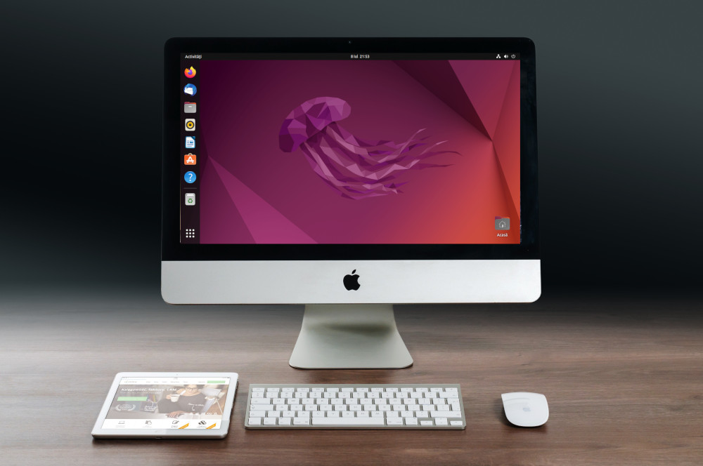

O que é Ubuntu?
O Ubuntu é uma das distribuições Linux mais populares se não a mais popular, oferecendo uma experiência de usuário fácil de usar e personalizar. Se você está procurando um sistema operacional seguro e confiável, o Ubuntu é uma excelente escolha.
Uma das grandes vantagens do Ubuntu é que ele vem com uma grande variedade de softwares gratuitos, incluindo aplicativos de produtividade, navegação na web e entretenimento. Além disso, a comunidade de usuários e desenvolvedores é muito ativa, o que significa que você sempre pode encontrar ajuda e suporte facilmente.
Historia
O Ubuntu é uma distribuição Linux que foi lançada pela primeira vez em 20 de outubro de 2004 pela Canonical Ltd., uma empresa fundada por Mark Shuttleworth. A ideia por trás do Ubuntu era criar uma distribuição Linux fácil de usar para usuários iniciantes, mas também poderosa o suficiente para usuários avançados.
O nome "Ubuntu" uma palavra sul-africana que significa "humanidade para os outros". Shuttleworth, que é sul-africano, escolheu esse nome para refletir os valores de comunidade e colaboração que são centrais para a filosofia do Ubuntu.
O Ubuntu baseado no Debian, outra distribuições Linux popular, mas com algumas modificações para torna-lo mais facil de usar e mais amigavel para o usuario. O Ubuntu conhecido por sua interface de desktop facil de usar e por sua vasta coleção de softwares gratuitos disponiveis em seu resitório.
Desde seu lançamento, o Ubuntu se tornou uma das distribuição Linux mais populares em todo o mundo, com uma grande e ativa comunidade de usuario e desenvolvedores. A Canonical continua a liderar o desenvolvimento do Ubuntu e lançou varias versões desde seu lançamento inicial, incluindo a versão LTS (Long Term Support), que oferece suporte de longo prazo para empresas e usuario que precisam de estabilidade e segurança a longo prazo.
10 Destaques do Ubuntu
- Maior segurança: O Ubuntu é conhecido por ser mais seguro do que o Windows, pois é menos suscetível a vírus e malware.
- Gratuito: O Ubuntu é gratuito para uso pessoal e empresarial, enquanto o Windows requer uma licença que pode ser bastante cara.
- Atualizações regulares: O Ubuntu é atualizado regularmente com novas funcionalidades e correções de segurança.
- Melhor desempenho: O Ubuntu é conhecido por ser mais rápido e eficiente do que o Windows em muitos aspectos, como inicialização, desligamento e uso geral do sistema.
- Interface personalizável: O Ubuntu oferece muitas opções para personalizar sua interface gráfica, permitindo que você personalize sua experiência de acordo com suas preferências.
- Variedade de aplicativos gratuitos: O Ubuntu vem com uma grande variedade de aplicativos gratuitos, como editores de texto, planilhas, navegadores, players de música e muito mais.
- Facilidade de instalação: O Ubuntu é fácil de instalar e configurar, mesmo para usuários iniciantes.
- Comunidade de suporte: O Ubuntu tem uma grande comunidade de usuários e desenvolvedores em todo o mundo, o que significa que você pode encontrar ajuda e suporte facilmente se tiver algum problema.
- Maior liberdade: Como o Ubuntu é de código aberto, você tem mais liberdade para acessar e modificar o código-fonte do sistema operacional.
- Menor uso de recursos: O Ubuntu é conhecido por ser mais leve em termos de uso de recursos do sistema, o que significa que você pode executá-lo em computadores mais antigos ou com menos capacidade de processamento.